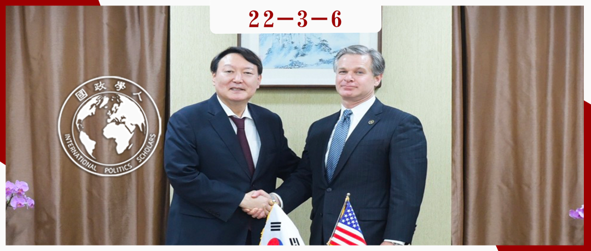

收录于合集

尹锡悦是“美国指定的总统”？
一项对美国介入韩国总统大选的研究
作者： 安文锡，韩国全北国立大学政治外交系教授。曾任韩国KBS记者、KBS国际部副部长。
编译： 姚寰宇（国政学人编译员，山东大学东北亚学院）；吕紫烟（国政学人编译员，山东大学东北亚学院）
来源： 안문석. (2008). 1987년 이후 미국의 한국 대통령선거 개입-변화된 양태와 정책적 함의. 한국정치외교사논총, 29 (2), 293-322.

导读
3月9日，韩国第20届总统大选落下帷幕，韩国前检察总长、高呼“审判文在寅政权”的在野党候选人尹锡悦，以微弱优势成功当选下一届韩国总统。在中美战略竞争日益激烈的当下，本次韩国大选不仅对韩国国内政治生态影响巨大，更引发了各国的高度关注。
韩国作为美国在东亚地区重要的盟友，其国内政治的走向对美韩关系的发展和美国在亚洲乃至全球战略的布局至关重要。本文的作者认为，即便美国时常表现出在候选人间“中立”的态度，但 美国干涉韩国总统选举的事实毋庸置疑。 冷战后，美国对韩国总统大选干涉的形式和程度发生了各种微妙的变化， 更多地以议题为导向，通过间接方式展开。 美国在韩国总统选举中的一举一动、对候选人的一颦一笑也往往会被各界解读为对某个候选人的支持与否，甚至是对韩国总统大选的介入。
本文的研究使用了大量的一手资料，深入浅出地分析了从1987-2002年间四次韩国总统大选中美国介入的方式和效果。从作者的分析中，我们很容易看出， 美国对韩国政治影响之深，对韩国社会思潮和政治动向理解之透，以及干预大选手段之妙， 而其根本目的，是维护美国的国家利益。
韩国的总统选举当然是其国民投票的结果，但是本文的一些研究结论，在 本轮韩国大选期间美韩两国的互动、候选人与美国高层的来往以及美国各界的表态的蛛丝马迹中，似乎再次得到了一定程度的验证。 在本次韩国大选期间，美国重要智库（如CSIS、兰德公司等）对文在寅政府的批评声音不断，并多次在对韩国对外关系走向的“预测”中与尹锡悦的政策“不谋而合”。甚至有更加阴谋论的说法指出，2019年9月24日，美国联邦调查局局长克里斯托弗·雷（Christopher Wray）访韩会见尹锡悦，并“指导”尹锡悦开始反对文在寅政府。
对中国而言，我们不会像美国一样对他国的内政进行干预，但是如何能够深入了解他国国内政治与社会变化，如何因势利导利用他国国内政治局势变动，如何巧妙通过多种途径向他国民众释放信号，如何妥善化解他国的反对情绪，都是我们可以从美国在美韩关系的实践中所学习的经验。国别区域研究方兴未艾，仍任重道远。
摘要
美国始终是韩国国内政治重要的影响因素之一。自韩国解放以来，美国对韩国国内的政治活动——尤其是总统选举表现出极大的关心，并通过各种直接或间接的方式介入到韩国的选举进程之中。在李承晚和朴正熙时期，美国多次通过中断经济援助等方式，积极干预韩国国内的政治议程。但是随着1987年韩国经过一系列国内运动从军政府转型进入民选政府，美国对韩国大选的介入方式也发生了变化，开始由公开的声明和警告， 转向与总统候选人和候选人周边核心人士进行秘密接洽，并委婉传达美方意向。 本文通过分析美国对1987年、1992年、1997年和2002年四次韩国大选的介入，分析美国介入形式的变化及其对韩国的影响。
编译
一
** 基本概念：何为“介入”？** ****
为了讨论美国对韩国选举的介入，作者首先对“介入” （개입，intervention） 的概念进行了界定。
介入通常被理解为带有军事性质，即意味着一个国家动员军事力量参与其他国家的国内事务。但在实际的国际政治中，除了军事介入还存在着通过协议、经济力量等包含各类模式的“广义介入”。作者认为，从广义介入的概念入手可以更好的分析美国对韩国总统选举的介入。
“广义介入”包括以下含义：第一，介入必须是有意为之， 是一个国家怀着特定目的对他国内政的干涉。 第二，介入的手段多种多样， 不仅包括传统介入概念所包含的经济、军事介入，还有包括通过外交声明、发言、联合第三国施压等方式。 第三，介入不仅包括试图对一个国家外交政策进行改变的行为，也包括努力使一国的政策不被改变。 因此，美国在韩国总统选举前后通过多种渠道收集情报，并会见总统候选人、了解他们的政策方向，传达美国立场的行为，可以被认为是美国对韩国总统选举的介入。本文以这样的概念为基础，分析1987年韩国大选以后美国对韩国大选的介入形态和变化趋势。
二
美国为何介入韩国大选？
冷战时期，美国对韩国总统选举的介入力度最大。这背后有两个原因：一个是在美苏争霸的背景下， 美国出于对“民主主义”意识形态在世界扩散的考量；另一个是来自于美国的“权力意识 （sense of power） ”——美国是世界上权力最大的国家，且拥有将各国从希特勒和斯大林手中“解放”出来的“使命感”，在这种意识的推动下介入到其他国家的内政之中。
但是在冷战结束后，这种情况发生了转变。 一方面，韩国自身发生了较大变化。 冷战结束后，韩国分别与中国、俄罗斯等国家建立外交关系，从威胁的角度看尽管还深受朝鲜问题的困扰，但是与冷战时期显然不可同日而语，因此对美国的政治依赖减少，美国的介入也从而减弱。同时，随着韩国民主转型的完成，金泳三、金大中政府不断推行选举的自由公正，公开公职人员财产信息，禁止军队介入政治，且人民文化生活水平不断提高，美国主动介入的难度也在上升。 另一方面，美国的介入倾向也发生了变化，改变1987年以前对韩国政局的维持现状政策， 而是在保持积极关注的同时，消极和间接的介入。相比于在韩国国内反对威权、传播“民主主义”， 美国更关注的是韩国本身的安全，但其最终目的是自身国家利益的最大化。 从大趋势来看，应该说美国以扩张自身国家利益的基本认识为基础，以韩国的稳定和落实民主主义与市场经济这两个旗帜为中心，不断推进对韩国的战略。
三
** 美国如何介入韩国大选？基于1987-2002年四次大选的分析**
（一）1987年大选：支持组建文民政府，反对军政府介入，支持卢泰愚
**
**
1. 对组建“文民政府”的支持
**
**
20世纪80年代，美国为寻找应对本国经济萧条的突破口，需要第三世界国家进行新自由主义改革。因此，美国积极支持第三世界所谓“权威主义政权”的民主化，并介入这一过程。可以说，美国支持韩国“民主化”也是在这种背景下推进的。
1987年2月，美国国务院负责亚太和平事务的助理国务卿小加斯顿·席格尔（Gaston Sigur）发表演讲，表明了对韩国状况的基本立场。他说：“希望在韩国创造新的政治体制，军政府应该转型成为文人执政的民主政府。”以席格尔的发言为契机，对民主化和军队介入政治的反对在1987年总统选举过程中成为美国持续关注的问题。
1987年4月11日，时任韩国总理卢信永向美国驻韩大使李洁明（James R. Lilley）提前通报了全斗焕政府发动“413护宪措施”的计划，随后美国国务院经过审慎考虑，再次通过李洁明回复卢信永称“美国的基本立场始终是对话和协商，全斗焕总统中断修宪协商的措施不是一个好办法”。 但是全斗焕政府无视了美国的提醒，致使韩国民主化运动愈演愈烈。 到了1987年后期，曾经支持全斗焕政府的美国产生了“撤销对全斗焕政府支持”的想法， 并付诸行动积极支持韩国政治文民化。
此后，从距离大选还有半年时间的1987年6月开始， 美国高官开始了较为密集的访韩与表态， 包括6月美国国务院副国务卿爱德华·德文斯基（Edward Derwinski）访韩、7月和8月李洁明三次会见时任统一民主党顾问金大中、9月加斯顿·席格尔与美国国防部官员访韩、10月副国务卿迈克尔·阿玛科斯特（Michael Armacost）访韩并会见韩国总统候选人等。 无一例外，这些美国高官访问韩国时，都表达了对全斗焕政府的批评，以及对组建文民政府的支持。 美国官员在与总统候选人的交谈中，也表达了对美国维护美韩同盟信心的承诺，暗示候选人在当选后需要进一步发展美韩关系，以此达到事先阻止政权交替导致的美韩关系恶化，从而维护美国利益。
2. 反对韩国军事势力介入
同时，美国也对韩国军队势力干政表现出极大的关切。鉴于在1980年光州事件中，民众和舆论对美国不作为的责难，美国认为，在韩国军队的作战指挥权受联合司令部控制的情况下，无论韩国军队以何种方式出动，美军都难辞其咎。因此，为了韩国文民化的发展以及出于对韩国反美情绪的担忧， 美国官员多次明确要求全斗焕当局禁止使用军队介入选举。
1987年6月19日上午10时，全斗焕再次在国内主要城市和大学部署军队，以阻止民众游行示威。当天下午2时，李洁明大使带着里根总统的亲笔信去拜访了全斗焕总统。行前，李洁明与时任驻韩美军司令官威廉·立夫西（William Livesey）达成“最好不要在政治混乱的情况下动用军队”的共识。里根信中语气温和地表示希望韩国政治稳定，但李洁明态度强硬。 会谈结束后不久，全斗焕便取消了军队动员令。这被认为是美国在关键时刻发挥的重要作用。 此后，美国军方和国务院多次向韩国军方明确表态，称如果韩国动用军队来重新掌权，美国将会停止对韩国的超党派援助。这一威胁起到了良好的阻吓效果。
3. 成功支持卢泰愚？
**
**
对于美国在1987年大选中是否支持执政党民主正义党候选人卢泰愚的问题，各界始终难下定论。 1987年9月，美国总统里根会见了当时的执政党候选人卢泰愚， 可以看做是美国对其的间接支持。鉴于美韩关系的特殊性，以及美国在韩国选民中总体积极的形象，卢泰愚访美可以看作是对其选举运动起到了积极作用。（尽管并非所有访美的候选人都获得成功，如2002年大选中的李会昌。）
但是，美国官方文件对此的公开表态却是慎重的。在卢泰愚访美后，美国国务院向美国驻韩大使馆发送的电文强调说：“卢泰愚访美并不代表美国对韩国选举的介入或对某一候选人的支持。” 然而，作者在美国驻韩大使馆与国务院的电文中，发现了美方对卢泰愚积极的评价和一些具有倾斜性的蛛丝马迹。 例如，美国副国务卿德文斯基曾向同为军队出身的卢泰愚提议“虽然过程艰难，但卢泰愚候选人应该用温和的方式远离全斗焕总统”，建议其在摆脱全斗焕的阴影、表现出独立面貌的同时，避免与全斗焕建立敌对关系。 这些“箴言”都在卢泰愚的胜选中起到了极大的作用。
（二）1992年大选：关注韩国选举公正问题
在1992年的大选中，韩国人民文化生活水平大幅提高，而且没有以军队为背景的候选人。因此， 韩国选民关注的焦点是选举是否公平。 美国的关注也集中到了这一方向上。美国政府并未考虑自己会受到“干涉内政”的指责，甚至考虑以声明的形式正式要求韩国提出进行公正选举的方案，可见美国对韩国的公正选举非常关注。
1992年11月20日，韩国在野党议员在拜访美国国务院亚太助理国务卿威廉·克拉克（William Clark）时，提出了要在韩国进行公正选举的要求，克拉克强调说：“美国也在关注韩国大选的公正选举。”同时，他还承诺，美国国务院将研究发表敦促韩国公正选举的声明问题。12月1日，美国众议院议员迈克尔·福格里塔（Michael Foglietta）访问韩国，并与总统候选人金大中、国务总理玄胜钟强调公正选举的重要性。他强调，“此次选举的公正与否将对今后的韩美关系产生很大的影响。”在竞选前夕，助理国务卿克拉克和驻美大使玄鸿柱面谈，继续强调了美国对选举公正的关切。
1992年总统选举结束后，时任美国驻韩大使唐纳德·格雷格给金泳三的选举对策总部打电话表示祝贺，并给金大中的私宅也打了电话。他还特别致信另一位候选人郑周永，“祝贺他为加强韩国的民主主义做出的贡献。”
美国对1992年韩国公平选举表达了关心和担忧，但却没有采取什么积极的行动。美国政府没有干涉韩国内政的意向，只是想避免表现出介入大选的姿态。 美国也没有像1987年大选时一样，做出支持某个候选人的举动。美国对1992年大选的立场是，在韩国的民主化过程中，公平选举是当时最核心的课题，美国需要随时强调这一点，并在注意观察韩国总统选举的同时，避免直接参与。
（三）1997年大选：施压候选人承诺履行IMF协议，多渠道研判大选结果
1. 要求韩国履行IMF协议
**
**
1997年，韩国受到金融危机冲击，经济和社会面临严重动荡。韩国政府请求国际货币基金组织（IMF）施以援手，但后者却提出苛刻的附带条件， 美国也希望借机利用韩国与IMF签署协议之际，改变韩国的经贸政策并从中牟利。 面对韩国金融危机，美国主导的IMF所提供的援助和解决方案不是金融救济，而是要求大规模开放韩国市场、提高利率，让韩国企业进行紧缩经营。如果韩国履约， 将为美国很多企业对韩国市场进行大规模投资创造必要条件。 因此，如何与IMF合作纾困成为总统候选人和美国共同关注的重要议题。
1997年11月26日，当时的“DJP联盟”（金大中和金钟泌为赢得选举组成的政治联盟）中的重要人物朴泰俊访问美国驻韩大使馆，时任驻韩副大使理查德·克里斯滕森（Richard Christenson）问道：“如果现任政府与IMF达成协议，金大中候选人当选总统后，将如何处理这一问题？”其言下之意在于要求朴泰俊解释，如果在大选尘埃落定之前，现任政府与IMF签署了会给韩国企业和家庭带来痛苦的协议，金大中当选后是否会反悔。美国驻韩大使斯蒂芬•博斯沃思（Stephen Bosworth）还在 非正式晚宴中会见了执政党和在野党候选人团队的核心参谋们 （包括李会昌候选人团队的玄鸿柱、司空壹和金基桓，以及金大中候选人团队的赵淳升和罗钟一），强调了履行IMF计划的必要性，说明美国对IMF和韩国如约履行协议的极大关心，并强调该协议不应被利用在政治上。同时，他承认，强调履行IMF协议是为了美国的利益。随着总统选举的临近，在野党的金大中和李仁济两位候选人主张：“如果执政，为了防止接连倒闭和大量失业，将重新协商IMF协议。”对此，美国大使馆方面立即采取了应对措施。副大使和负责政治事务的公使参赞出面会见两个在野党的核心人物时强调：“这样的主张很难（让美国）恢复对韩国经济的信任。” 尽管大选中的影响因素很多，但美国在改变候选人主张方面起到了巨大作用。
在选举结果公布四天后，美国副财长戴维·利普顿（David Lipton）访问韩国，再次向当选总统金大中确认其履行IMF协议的意向。同时，美国驻韩大使馆积极阻止金大中方面与IMF进行重新协商的举动。由此可见，美国在事关本国利益的问题上，计划缜密、手段强硬。
2. 多渠道研判选举结果的走向
**
**
面对1997年大选中韩国政坛可能出现的政党轮替， 美国通过各种渠道，对韩国大选的走向给予了充分的调查和研判。 除了IMF计划的履行问题，在政治、经济、安保等各个领域对美国利益产生何种影响的观点上，美国对各候选人的信息与观点进行了详细的整理和分析。
1997年12月12日，离选举还有6天， 美国驻韩大使馆与韩国盖洛普等民调机构负责人进行面谈。 通过会谈，美国得知金大中的民调领先李会昌10%左右，只要不出现李仁济退选或者韩国岭南地区选票转移到李会昌一侧这两种情况，金大中当选的可能性就会非常高。金大中当选的瞬间，美驻韩大使馆根据不同领域，完成了分析金大中当选对美国利益的影响的电文，并发送给了美国国务院。该电文以国防和美军为主，包括朝鲜问题、与IMF协商问题等。电文认为金大中在对外关系和经济问题方面的观点表明，美国的利益不会受到损害，因此美国认为金大中当选符合美国的利益。
此外，在1997年大选中，美国还关注“韩国政治是否进行新老交替”的问题。直到1997年11月初，美国仍认为，代表年轻世代的李仁济候选人有当选的可能性。1997年11月3日，驻韩副大使克里斯滕森会见李仁济后向美国国务院发电汇报，认为李仁济的崛起是由于青年选民对政坛新老交替渴望的体现，而如果李仁济能够将反对金大中选民的选票收入囊中，则很有可能当选。
（四）2002年大选：关注反美情绪，支持李会昌失败
**
**
1. 关注韩国反美情绪
**
**
2002年6月13日，韩国发生了驻韩美军装甲车碾死女学生事件。美国对两名涉事士兵的无罪释放的举动在韩国社会引起了巨大的反美声浪。美国也对韩国社会的这种反美情绪会如何影响韩国政局的发展、会如何影响总统选举的结果给予了巨大关注。当时，美国初陷反恐泥潭，亟需盟友支持。而在这种情况下，防止反美情绪在世界各地的扩散成为了美国当局最关心的问题。
尽管美国采取各种措施，试图为韩国高涨的反美感情降温，但是到大选前夕仍难见成效。为此，美国总统小布什于11月27日对此表示遗憾，并承诺今后不会再次发生类似事件；12月6日在美国华盛顿举行的第34届韩美年度安保协议会（SCM）上，两国就改善韩美驻军地位协定（SOFA）的运营方式达成了协议；大选前一天的12月18日，访问韩国外交部长官崔成泓的参议员杰克•里德（Jack Reed）对女中学生死亡事件表示了深深的遗憾和哀悼，并对韩国参与反恐战争做出的贡献表示感谢。
卢武铉属于韩国进步派政治人物，而韩国的反美示威也主要是由进步势力主导的。因此许多人认为，美国可能会对卢武铉的当选使出下马威。但是，大选结束后，美国方面通过外交途径对卢武铉当选表示了正式的祝贺，并对卢武铉表示了好感。美国驻韩大使托马斯·赫巴德（Thomas Hubbard）会见了青瓦台外交安保首席秘书官任晟准，并表示已经准备好与韩国合作。可以说，这是美方为了缓和以与卢武铉有直接或间接联系的进步势力为中心的反美示威和反美情绪而做出的努力。
2. 支持李会昌失败？
**
**
在对具体候选人的支持上，尽管卢武铉当选后美国马上表示支持，但作者认为， 美国在2002年的大选期间虽然声称在候选人之间保持中立，但是从实际行动看，却有支持保守派候选人李会昌的倾向。 在克林顿政府时期，美国规定惯例，要求在接待访问华盛顿的韩国总统候选人时，不论朝野，都会以次官助理级别限制面谈水平。但是，2002年1月，大国家党总裁李会昌访问华盛顿时，接连会见了小布什政府的副总统切尼、国务卿鲍威尔、白宫国家安全事务助理赖斯、副国务卿阿米蒂奇、国防部长沃尔福威茨等美国政府核心人物。小布什政府虽然没有在言语上明确支持李会昌，但李会昌与美国如出一辙的对朝政策表述，以及破格的高层会见都向韩国民众传递出支持李会昌的信号。
四
** 结 论**
本文以美国政府的有关文件为中心，分析了美国介入韩国大选的过程。作者认为，在1987年以后，美国对韩国大选的介入程度明显减弱，在韩国大选中发挥的功能与作用也在减少。 但是如果韩国发生紧急事态（如1997年金融危机和2002年大规模反美示威），美国的介入程度就会加强。
作者还总结道，1987年以后美国介入韩国大选的另一个特点是脱离了维持现状的倾向：如果说过去美国为应对韩国政治剧变事态的发生，首先把韩国整体政局的稳定重心放在了维持现状上，那么1987年以后则开始根据韩国国内政治生态和国际局势的变化，关注重要的具体议题。
最后，作者指出， 韩国政府可以妥善利用美国对韩国大选以议题为导向的介入方式。 在总统选举之际，美韩关系的重点应该放在正确把握美国所关心的话题之上，并在各部门之间进行协调。总统选举期间，细微的琐事可能助长韩国的反美情绪，引发美韩之间的意见冲突，因此韩国应该细致掌握美方的意图，在与美方紧密的协商中准确传达国内信息情报，防止两国之间不必要的摩擦。最重要的，是要在美韩关系的日常中，发展出“协议规范（consultation norms）”。
审校 | 卫艺璇
排版 | 黄紫蓝 彭凌懿
文章观点不代表本平台观点，本平台评译分享的文章均出于专业学习之用, 不以任何盈利为目的，内容主要呈现对原文的介绍，原文内容请通过各高校购买的数据库自行下载。

国政学人
支持学术公益与知识传播
微信扫一扫赞赏作者 __赞赏
已喜欢，对作者说句悄悄话
取消 __
发送给作者
发送
最多40字，当前共字
上一页 1/3 下一页
长按二维码向我转账
支持学术公益与知识传播
受苹果公司新规定影响，微信 iOS 版的赞赏功能被关闭，可通过二维码转账支持公众号。